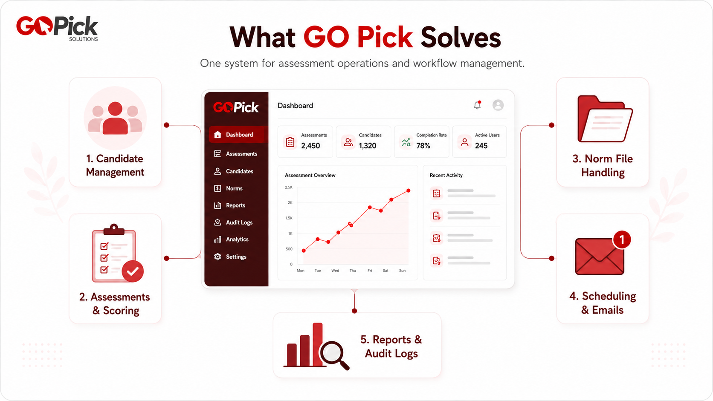

HR & Assessment
GoPick
People Dynamics Inc. · Related Experience →
Modernizing and extending an existing HR assessment platform supporting candidates, evaluations, reporting, and consumable report-generation credits while preserving legacy behavior.
Strongest Evidence: Legacy modernization → modular 5-layer architecture
Role
Major Contributor
Status
Production · Active Dev